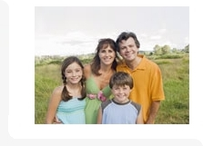

СПЕЦИАЛИЗИРАН КАБИНЕТ ЗА ПСИХОЛОГИЧНА ПОМОЩ
ИНДИВИДУАЛНО И ГРУПОВО КОНСУЛТИРАНЕ

Методи на работа:
Основно се работи на терапията ТУК и СЕГА –
което значи, че се работи върху проблема на клиента на принципа на трите К
което значи, че се работи върху проблема на клиента на принципа на трите К
Какъв е проблема ?
Колко решения има ?
Кое решение е най – подходящо?
Колко решения има ?
Кое решение е най – подходящо?
Този вид терапия и разговори повлияват най- добре за постигане на реални решения.
Можете да се обръщате за помощ както за еднократна консултация, така и за провеждане на курс от консултации, който води до подобряване на психичното Ви състояние.
Можете да се обръщате за помощ както за еднократна консултация, така и за провеждане на курс от консултации, който води до подобряване на психичното Ви състояние.
Когато имате нужда от помощ потърсете разговор с компетентно лице, като го усетите необходимост да споделите вашия проблем съветваме Ви обърнете се за помощ от компетентни и обучени специалисти, защото приятелските контакти трябва да са обагрени с красота и любов, а не обременени с тревоги и страдания.
Желаем на всеки да изпита щастие и удоволствие от живота си .
Може да се обръщате за помощ при по –тежки проблеми като панически разстройства, завишена тревожност, депресии, проблеми със съня, междуличностни взаимоотношения и т.н.
Желаем на всеки да изпита щастие и удоволствие от живота си .
Може да се обръщате за помощ при по –тежки проблеми като панически разстройства, завишена тревожност, депресии, проблеми със съня, междуличностни взаимоотношения и т.н.
Осъществяват се психологически консултации на деца и техните родители при:
- възникнали проблеми по време на възрастови кризи
- проявени детски страхове
- проблеми с адаптация към новите социални ситуации
- проблеми във взаимоотношенията с другите
- затруднения във връзката родители - дете
- проблеми с храненето
- безпокойство и безсъние на детето
- проявена детска агресия
- хиперактивност и др.
Психологическите консултации на Вашите деца се провеждат в специално пригодени игрови условия, подходяща арт терапия и много увлекателни моменти в процеса на терапията, в която вие ще сте съпричастни и вие ще се чувствате сигурно и комфортно.